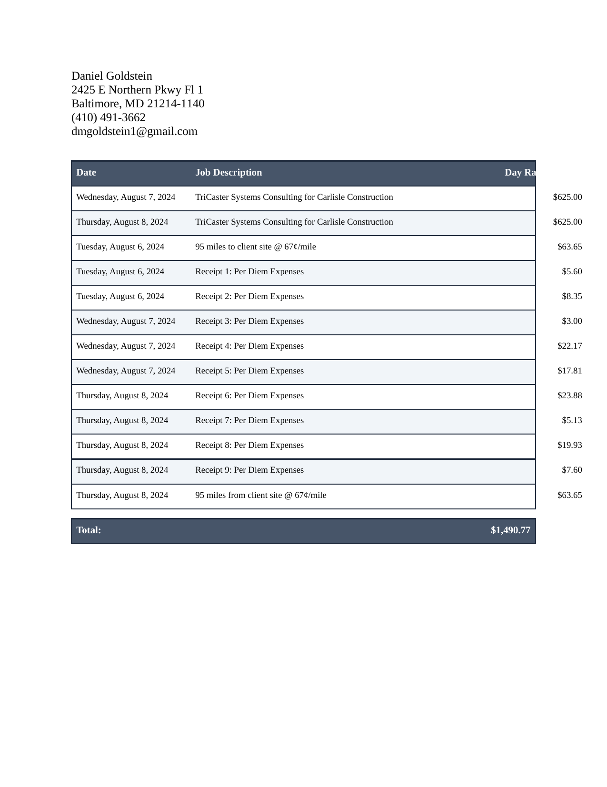
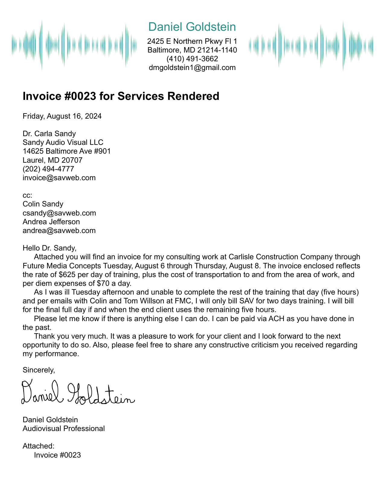
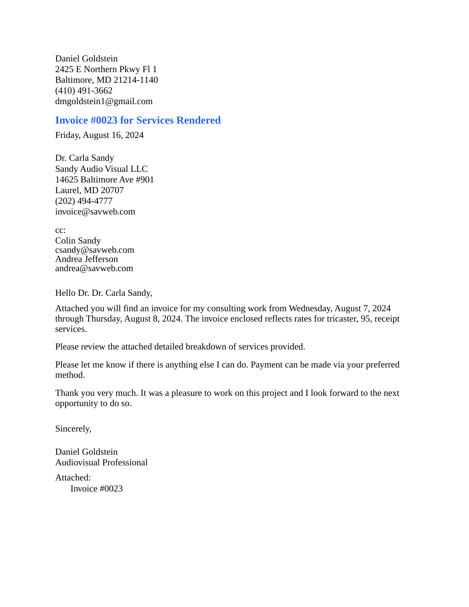

🔄 Style Iteration 2: Progressive Template Matching
📈 Progress Summary
Iteration 2 Focus: Improved table header colors and alternating row styling based on visual analysis.
📊 Page 2: Table Style Evolution
📋 TEMPLATE
(Target)

🔧 ITERATION 1
(Previous)

✨ ITERATION 2
(Current)

📄 Page 1: Cover Letter Evolution
📋 TEMPLATE
(Target)

🔧 ITERATION 1
(Previous)

✨ ITERATION 2
(Current)

✅ Improvements in Iteration 2
- Table Header: Darker slate-gray background more professional
- Borders: Darker borders for better definition
- Alternating Rows: Adjusted to light blue-gray tone
- Overall Contrast: Better visual separation between elements
🔧 Still Needs Work
- Header Graphics: Missing logo/graphics from template
- Color Fine-tuning: May need more precise color matching
- Typography: Ensure exact font weight matching
- Spacing: Fine-tune margins and padding
🯠Next Steps for Iteration 3
- 📊 Color Analysis: Extract exact colors from template if possible
- 🖼️ Graphics Integration: Add header graphics/logos
- 🨠Fine-tuning: Adjust remaining color discrepancies
- 👁️ Final Comparison: Achieve maximum visual similarity